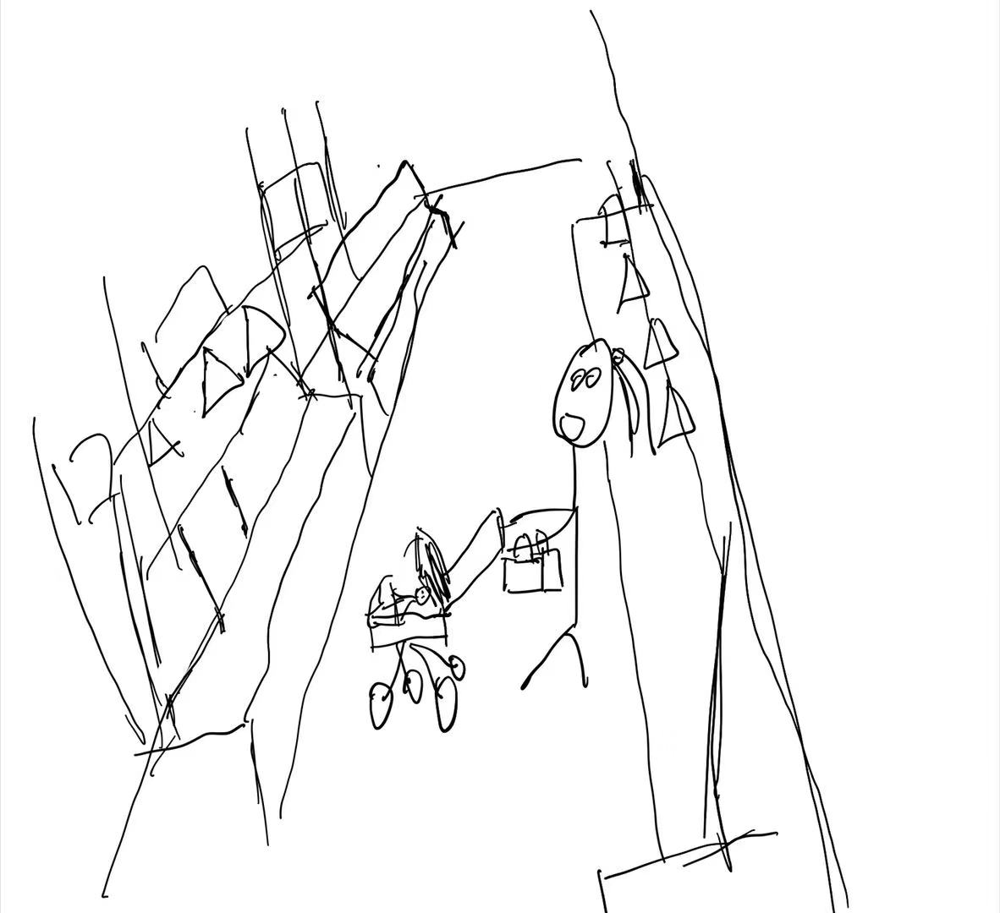
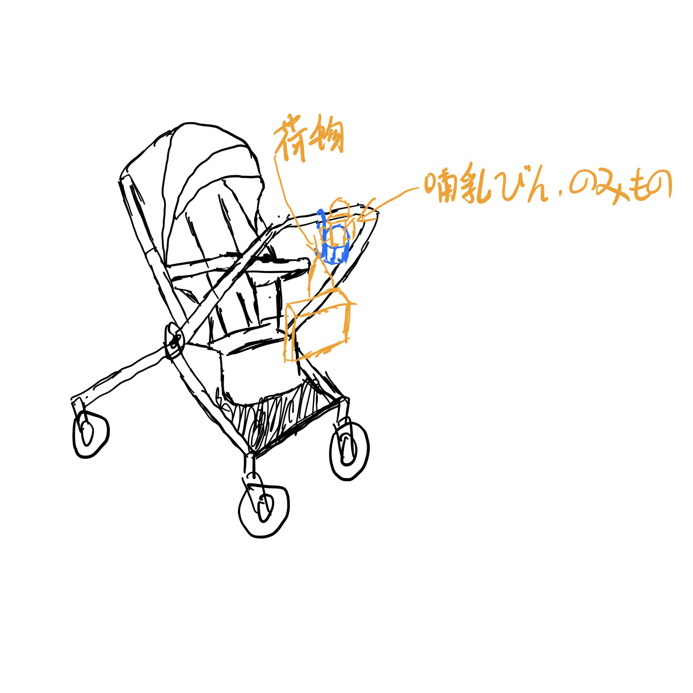
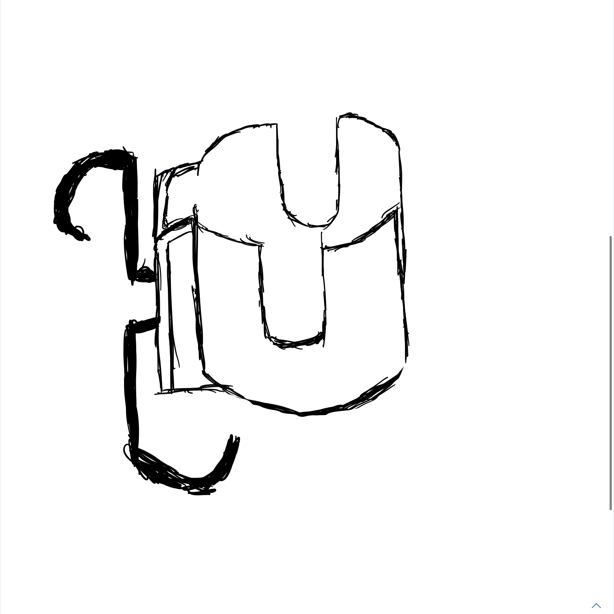
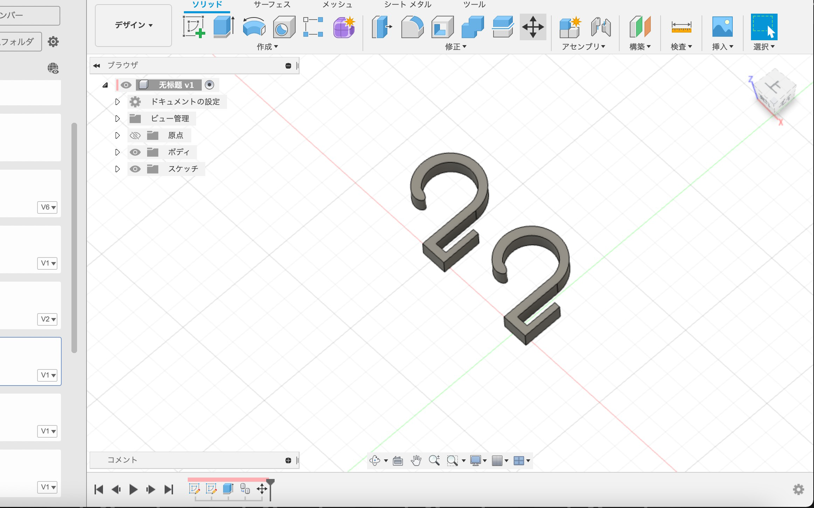
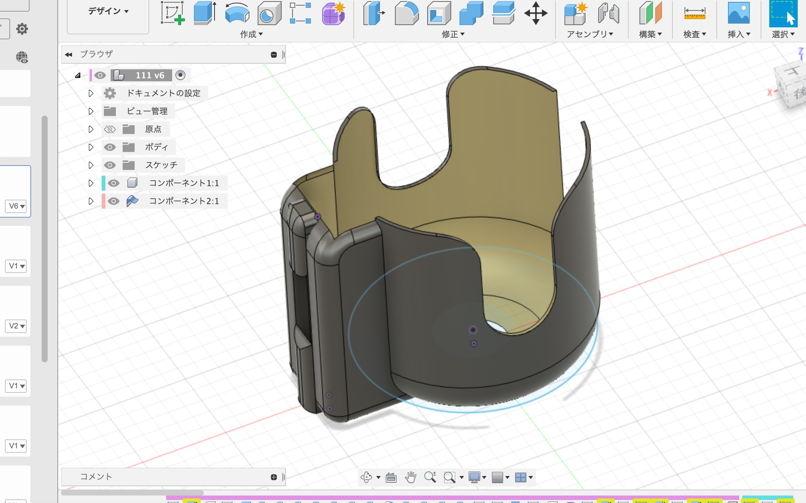
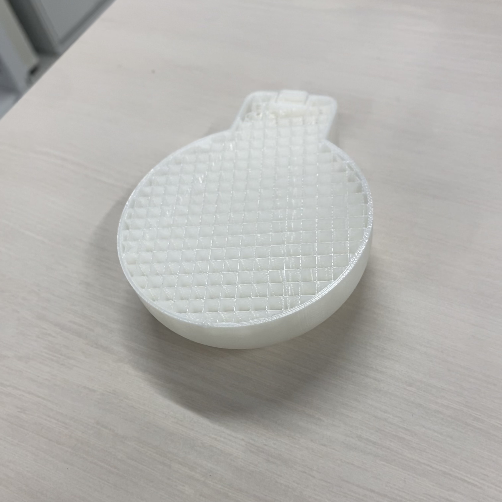
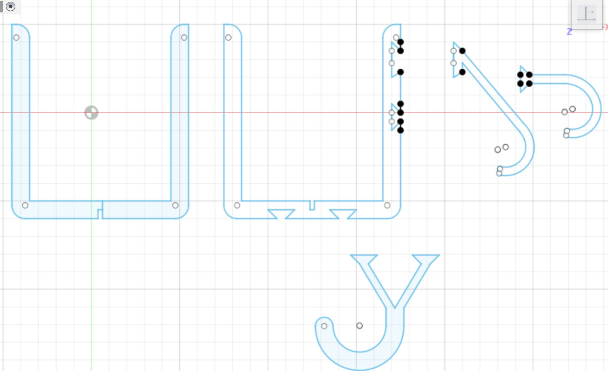
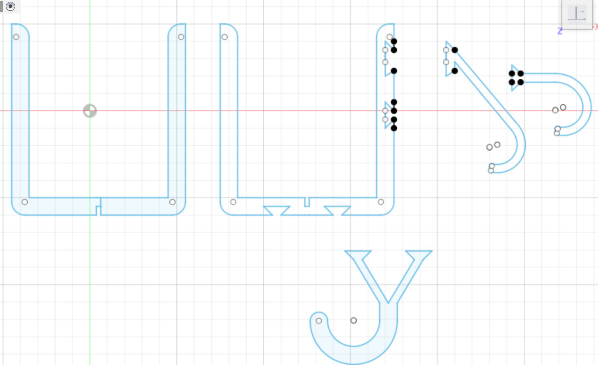

1.発想

電車の中で子供連れがいて、ベビーカーを押しながら、大荷物を持っているおばさんが目につきました。
それで、少しでも彼女の負担を軽くしてあげられないかと考えたんです。
２.構想スケッチ
 
ベビーカーの取っ手にホックをつけて、荷物を引っ掛けることができます。
同時にボトルケージを取り付けることで、哺乳瓶や飲み物をボトルケージの上に置くことができます。
３.制作プロセス
 
４.設計ファイル
dxfファイルdxfファイル
５.作品の画像

３Dプリントの際に問題が発生したため、作品は失敗しました。
時間が足りないため、再度プリントができません。。。
そこで、失敗したものを改造します。
６.失敗品に基づく改造。


7.感想・反省
失敗したが、少なからぬ問題点も露呈した。
安定性が弱いので、ボトルケージに飲み物を置くと傾いてしまいます。
8.改良された作品

7.感想・反省
失敗したが、少なからぬ問題点も露呈した。
安定性が弱いので、ボトルケージに飲み物を置くと傾いてしまいます。
8.改良された作品
